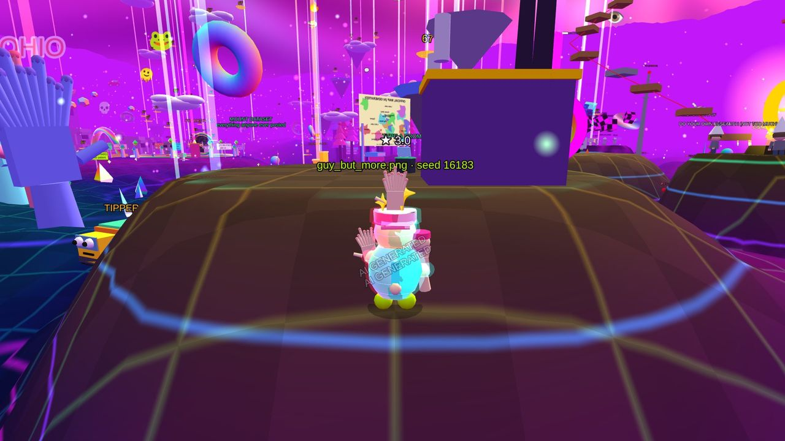
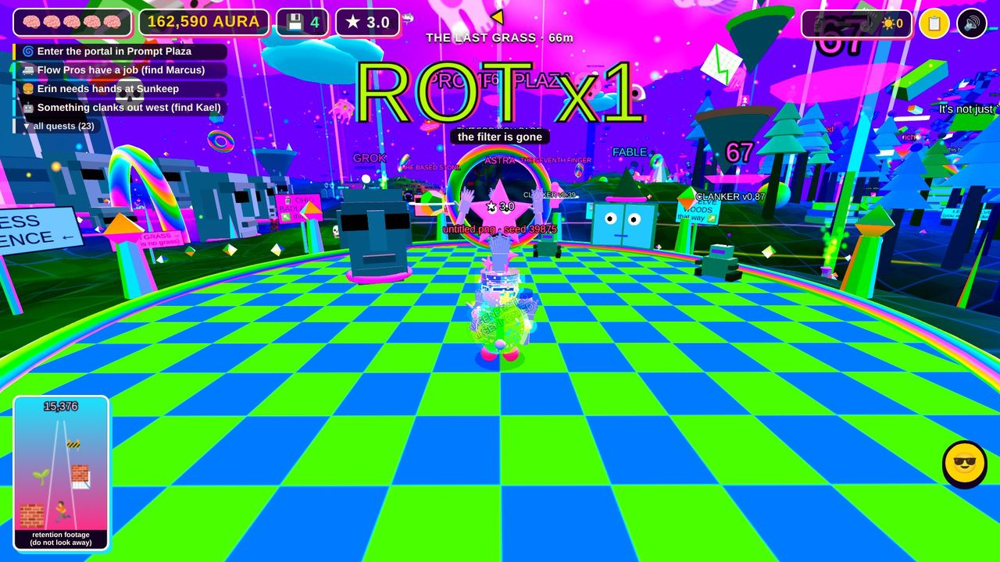

The filter is gone. So is your attention span.
You are a hero nobody finished rendering, dropped into Prompt Plaza with zero aura and too many hands. Three mascots want their relics back, THE ALGORITHM wants your watch time, and a plumbing van full of guest stars has crashed the crossover. Collect sixty-seven 67s, feed the Slop-O-Matic, follow the red string to an island of secrets, and climb Meme Mountain at x1,000,000 rot to read the first post ever made. It says “first”.





- A 3D world of pure slop. Twenty-six places, from the Ohio Badlands to The Cloud, which is just someone else’s computer.
- Platforming with four moves. A poop boost, a dash, a prompt hook, and three forms to change into.
- A crossover nobody asked for. Marcus, Derek, Erin, Will, Louie, lil Bottie, Kael, King Bibi and an Oracle of Time.
- A slop economy. Farm aura, dump data, buy chrome knees, infect your enemies with memes.
- A conspiracy with red string. Seventeen drops, a shrine, a secret island and the way out of the simulation.
- Sixty-three things to tick off. Fifteen buddies, eight fetch towers, hats, and a frog who decides if you are based.
“The cake is a hallucination. Subscribe to continue breathing.”The title screen ticker
Teens+Crude humour
Flashing colours
Flashing colours
Plays on any modern desktop or phone browser, with touch, keyboard and mouse, or a controller. One player. Saves on your device. Fast colour changes and flashes throughout.
© 2026 North Coast Studios. Title and character names are working names, not yet cleared.
© 2026 North Coast Studios. Title and character names are working names, not yet cleared.